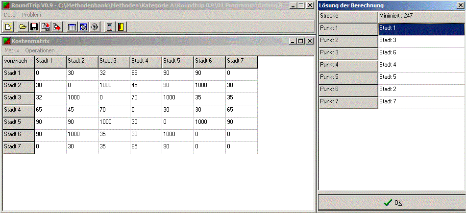

Roundtrip 0.9

Beschreibung der Methode:
Das Programm ermittelt den kürzesten Weg zwischen den anzufahrenden Städten, mit graphischer Darstellung am Bildschirm. Die Städte sind mit x- und y-Position, wie im Koordinatensystem einzugeben. Zuerst ist die Anzahl der Städte anzugeben. Danach werden die Koordinaten eingegeben.
Performance:Lauffähig bis 100 Städte
© HTWG Konstanz